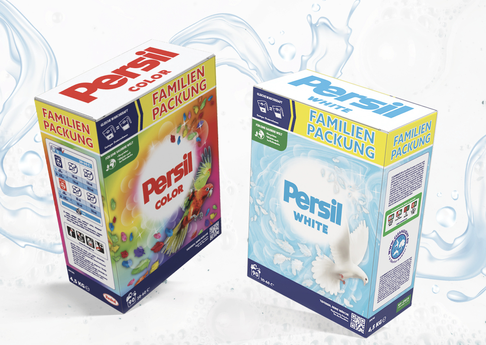

FOREST KITCHEN CSOMAGOLÁS
Szarvasgombás bőségtál csomagolás a Forest Kitchen cég számára. A tervezésben előtérbe helyeztem a fiatalos, modern stílust, viszont megmaradtam az erdei hangulatnál.

MOSÓPOR REDESIGN
Persil mosópor csomagolás, új köntösbe burkolózva. A szokásos virágos minta helyett, színes, illetve fehér tollakban pompázó madarak kerültek előtérbe.
LEPORELLO
Barnängen leporello, amely érzékelteti a cég érzéki és minőségi, illetve kultúrális jelenlétét a kozmetikumok világában.